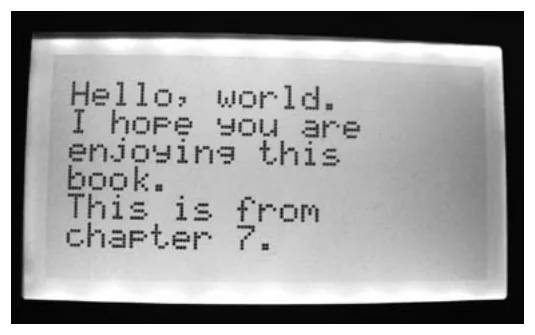

The text functions are demonstrated in this sketch:
// Project 26 - Seeing the Text Functions in Action
#include <glcd.h> // include the graphics LCD library
#include "fonts/SystemFont5x7.h" // include the standard character fonts for it
int j = 7;
void setup()
{
GLCD.Init(NON_INVERTED);
GLCD.ClearScreen();
GLCD.SelectFont(System5x7);
}
void loop()
{
GLCD.ClearScreen();
GLCD.CursorTo(1, 1);
GLCD.Puts("Hello, world.");
GLCD.CursorTo(1, 2);
GLCD.Puts("I hope you are ");
GLCD.CursorTo(1, 3);
GLCD.Puts("enjoying this");
GLCD.CursorTo(1, 4);
GLCD.Puts("book. ");
GLCD.CursorTo(1, 5);
GLCD.Puts("This is from ");
GLCD.CursorTo(1, 6);
GLCD.Puts("chapter ");
GLCD.PrintNumber(j);
GLCD.Puts(".");
do {} while (1);
}The sketch should display the output shown in Figure 7-9.

Creating More Complex Display Effects
Now let’s look at a few functions we can use to create various display effects. Keep in mind that the graphic LCD screen has a resolution of 128 columns of 64 pixels, but when we refer to them in various functions, they are counted from 0 to 127 across and 0 to 63 down.
This graphical function will turn on a single pixel at position x, y with the color set to BLACK, or it will turn off a single pixel with the color set to WHITE. The color parameter always sets black to on and white to off.
GLCD.SetDot( x , y , color ); // color is BLACK or WHITEThe next function draws a rectangle with the upper-left corner at x, y. The width is w, and the depth or vertical size is h. The resulting rectangle will have a black outline and a white background.
GLCD.DrawRect( x , y , w , h , color );This function draws a filled rectangle with the same parameters:
GLCD.FillRect( x , y , w , h , color );This function draws a rectangle with the same parameters but with rounded corners of radius r.
GLCD.DrawRoundRect(x, y, w, h, r, color);This function draws a circle with the center at x, y and a radius of r pixels:
GLCD.DrawCircle(x, y, r, color);This draws a vertical line starting from point x, y with a length of l pixel.
GLCD.DrawVertLine(x, y, l, color);And this draws a horizontal line starting from point x, y with a length of l pixel.
GLCD.DrawHoriLine(x, y, l, color);With the functions discussed so far and some imagination, you can create a variety of display effects or display data graphically. In the next section, we’ll build on our quick-read thermometer example using the LCD screen and some of these functions.